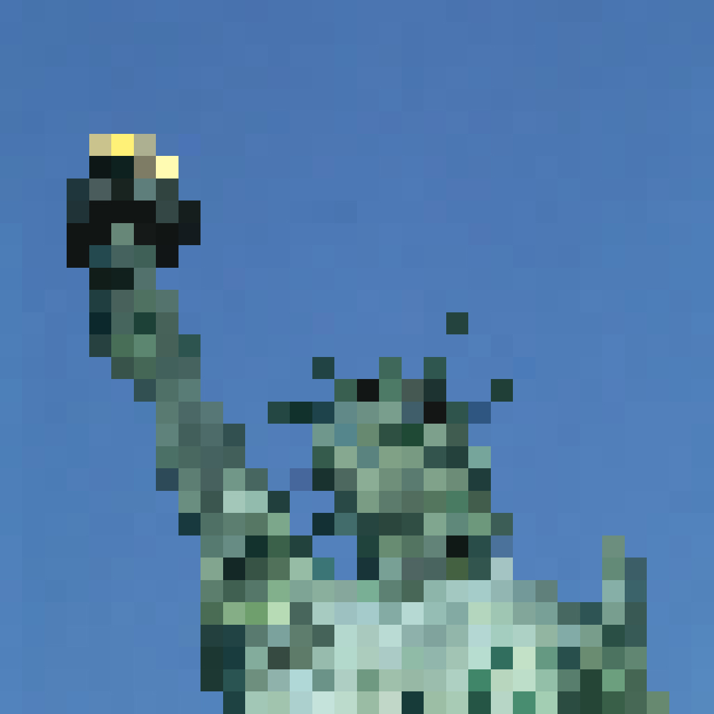
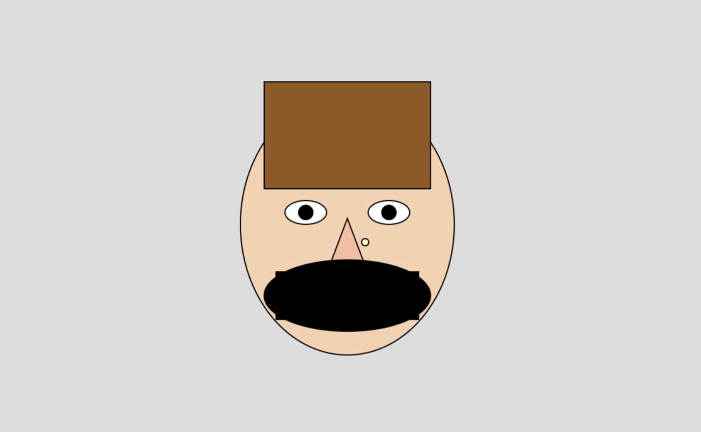

Pixelated
The Pixelated project was surprisingly fun and much more approachable than I expected. I had never made pixel art before, so learning how simple and effective the process can be was a great experience. I created this in Photoshop and ended up using some of the techniques I learned here in other classes. I definitely see myself using pixel-style methods in future creative work.
Bad Photoshop
This assignment let me be creative in a funny, expressive way. I had completely forgotten about the photo of my head spinning like a basketball, and bringing it back for this project made the whole process really fun. The playful nature of the assignment even helped influence a collage I made in Ideas & Concepts later in the semester.

Perfect Mask
Perfect Mask reminded me of collage work I had done in 2D Design with Mr. Pinkard, so the techniques felt familiar but still challenging. I really liked this project and think my results turned out strong. The content-aware fill, masking, and cropping strategies I used here have already helped me in other classes, and I'm glad I gained more confidence in these tools.

Animated GIF
My animated GIF didn’t turn out great, but I learned a lot from the struggle. I tried making it frame-by-frame in Photoshop, which ended up being way more complicated than it needed to be. A classmate told me there was a much easier method. Even though the final GIF is rough, I walked away understanding animation timing, layers, and the basics much better.

Glitch & Grit
This was the hardest project for me by far. I worked on it during a road trip to Miami, which meant poor internet, a cramped environment, and lots of frustration. Still, the project reminded me of my intermediate programming class and pushed me to problem-solve creatively. Even though it was tough, I’m proud that I stuck with it and completed it.
P5.js Portrait
The P5.js Portrait assignment was a unique experience unlike anything I had done before. I had never heard of this method of digital drawing, so experimenting with it was exciting. The process was new and different from Photoshop or Illustrator, but I enjoyed figuring out how it works and creating something that felt one-of-a-kind.
What If
For the What If project, I loved being able to work in my own style and explore an idea that felt both strange and creative. My concept of hackers expanding the moon made me think of comic book storytelling, and I even considered taking a comic book class next semester because of it. This project let me build something imaginative that I could easily expand into a bigger visual narrative.